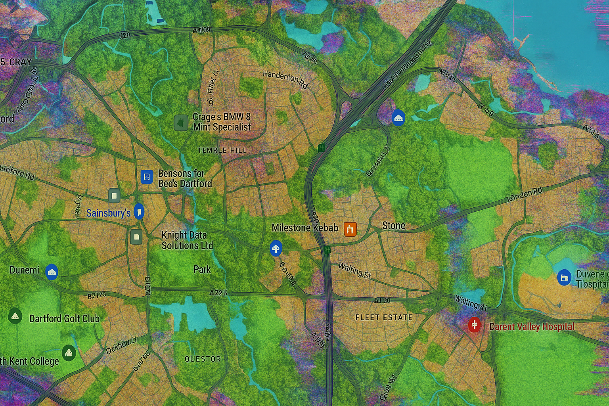

RPG Prototype
Glitch Haven RPG
A lightweight 2d6 tabletop RPG set in a modern world where broken game logic is leaking into reality.
Corebook Alpha 1.0
Urban survival meets corrupted game logic
Players explore corrupted streets, rescue NPCs, build safe havens, craft gear from everyday objects, awaken patron shrines, and fight enemies born from the collision of urban life, nature, and digital corruption.

Website Version
First public prototype upload
01
Fast Core
2d6 + Stat vs Difficulty Rating, with stats from 0 to +3 for quick table play.
02
Playable Modules
Character creation, classes, combat, crafting, safe havens, shrines, and bestiary entries.
03
Starter Adventure
The Glitch in Tower 9 gives the first playable mission structure for testing the rules.